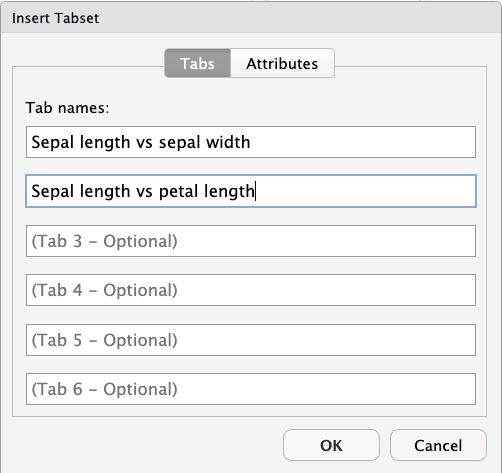

x <- 5
x * 6[1] 30Basic formatting, citations, code chunks, tabsets, callouts, and more.
The source documents for your website’s pages are in the Quarto (.qmd) format. Today, we will learn more about options to format Quarto documents, and to include code and its output.
As we have mentioned before, Quarto is a type of Markdown format (and essentially the successor to “R Markdown”) with extensions such as:
Making it possible to include executable code and its results. This code will typically be R code, but Quarto also supports Python, for instance.
A more extensive set of built-in formatting options, like “callout boxes” and “tabsets”, which we’ll see today.
Your website’s Quarto documents will all produce HTML output, and this is also the default (and generally preferred) output format for stand-alone Quarto documents, but it is also possible to output to Word and PDF formats.
A common use case for stand-alone Quarto documents is a digital notebook or report that includes results produced by R code. If you use R to produce some results and/or figures that you need to share or compile with accompanying notes, then using Quarto to do so is a lot easier, more robust, and reproducible than copying and pasting figures into (e.g.) a Powerpoint document.
Because it’s straightforward to make the output look polished, and because you can include citations too, it is also a good option for more formal reports and even manuscripts. As mentioned last week, you can also output a slide deck, and it is even possible to include these directly on your website since the output format for slides can be HTML.
We will continue to use RStudio’s Visual Editor, and will basically make our way through the options in the bar that is right above your main editor window (but only when you’re in “Visual” mode):
I will start by creating a new Quarto document to practice using these features. If you want to follow along:
The dropdown menu to the left of the bullet list icon (it will say “Normal” unless you’re cursor is on a header line) allows you to pick a header level as opposed to the default, “Normal” formatting for your focal paragraph. Recall that headers will:
Be numbered if you use the YAML option number-sections: true either site-wide (in _quarto.yml) or at the top of your focal document
Show up in a Table of Contents if you use the YAML option toc: true.
By default have “anchors” that you can see when you hover over or near them in the output. Clicking on an anchor will give you a direct link to this section in your document.
You can use regular hyperlinks (see below) to refer to different pages and specific headers on your website. Additionally, it is possible to insert clickable cross-references to e.g. figures and tables — see these Quarto docs.
“Link” to include a clickable link with custom text.
Footnote1, which shows up as a superscripted number in the main text, with the full footnote printed at the bottom of the page. Best of all, you can also hover over the superscripted number to see the footnote text.
‚ÄúSpecial characters‚Äù => ‚ÄúInsert Emoji‚Äù => ü§ì.
“Horizontal rule”, which can be nice to break up your content:
Addings citations is also possible via the “Insert” drop-down menu. Any citation you add will be automatically included in a reference list at the bottom of the document! In the text, the citation will show up as a link to the reference list and you can also hover over the link to see the full reference: (M. Horst, Presmanes Hill, and B. Gorman 2022).
This is a really nice feature that benefits a lot from the RStudio Visual Editor. Without the Visual Editor, you’ll have to make a text file yourself with all the information for each reference (a bibliography in BibTex (.bib) format) — this can be exported from your reference manager, but that’s still a hassle because you often add citations one-by-one to a piece of text. With the Visual Editor, you can search for references online and when you include a reference:
bibliography: references.bib. This line will make sure a reference list is added to the end of the document.If you have Zotero installed on your computer, then your Zotero library will be automatically available. Otherwise, you can search for references in several ways, as shown by the following screenshots:

To format your citations, both in terms of how they appear in the text and in your reference list, see this Quarto documentation page.
If you didn’t already do so, it probably makes sense to create a new Quarto document for this experimentation.
After you’ve used a couple of features, switch from “Visual” to “Source” editor mode, and check what the syntax is for these features!
Both under the “Format” and “Insert” drop-down menus, you can find the “Code block” item, which will insert a block (one or more lines) of code-formatted text — but code in this type of block will not be executed. When the pop-up window asks you to type the name of a language, you can type “R”, but this information is only used for code formatting purposes. These kind of blocks can be useful if you just want to demonstrate/explain some code:
x <- 5
x * 6By contrast, the “Executable Cell” item (again, choose “R” as the language) will produce blocks also known as “Code Chunks”, which contain code that can be executed. By default, the code will in fact be executed and its results (if any) will be printed below the code chunk:
x <- 5
x * 6[1] 30Because code output consisting of just a number is a little boring, let’s insert a chunk with the following code, which will produce a plot — and that plot will similarly be shown below the code as follows:
library(ggplot2)
ggplot(data = iris,
mapping = aes(x = Sepal.Length, y = Sepal.Width, color = Species)) +
geom_point()
…Or a chunk that produces a simple table: in this case, simply the first lines of the iris dataframe. This dataframe output will display as shown below (which is a little nicer than the default formatting) when you include a line df-print: kable in the YAML header of your document:
head(iris)| Sepal.Length | Sepal.Width | Petal.Length | Petal.Width | Species |
|---|---|---|---|---|
| 5.1 | 3.5 | 1.4 | 0.2 | setosa |
| 4.9 | 3.0 | 1.4 | 0.2 | setosa |
| 4.7 | 3.2 | 1.3 | 0.2 | setosa |
| 4.6 | 3.1 | 1.5 | 0.2 | setosa |
| 5.0 | 3.6 | 1.4 | 0.2 | setosa |
| 5.4 | 3.9 | 1.7 | 0.4 | setosa |
Default behaviors for code chunks are to print the code (echo: true), to execute the code (eval: true), and to show the output produced by the code (output: true), including any warnings produced by the code (warning: true).
Any of these can be changed both at a website-wide or document-wide level, as well as at the level of individual code chunks (the latter would override the former).
To change settings at the site or document-level, use the execute key in your YAML file or header (see these Quarto docs) — in the example below, we turn off printing of the code itself as well of any warnings that the code might produce:
execute:
echo: false
warning: falseTo change settings for an individual chunk, the same YAML keys like echo can be used, but in special comment lines (with #| prefixes) at the start of a code chunk:
A really useful option is to “fold” the code by using code-fold: true in the YAML header. That way, code will not be shown by default, but can be shown for each individual code chunk by unfolding it. This is great when you want to emphasize your results, but do want make the underlying code available to anyone who might be interested.
For example, for the plot we produced above, if we set code-folding to true, it would produce a box like this above the plot — and clicking on that box would then show the code:
Above, we saw that we can create plots and include them in the document. Of course, we can also include figures made elsewhere, or photos, etc — and you have probably already done this for your website. When inserting a figure (e.g. by clicking the picture icon in the top bar), you can for example include a caption and specify how you want it aligned:
Somewhat oddly, the options for the figure size only show up once you’ve clicked OK to insert the figure — you’ll see this box below the figure:
There are different ways/units to size the figure: I prefer “%”, which will allow you to specify the width in percentage of the total page (or focal box) width, as shown above.
When Clicking “Insert Table” in the “Table” dropdown menu in the top bar, you’ll get a pop-up to create a table, similar to how this works in Word:

This will produce a table skeleton like the one shown below, which you can then fill out:
Here is an example of what a rendered table will look like, with previous Code Club sessions this semester:
| Session | Date | Presenter | Link |
|---|---|---|---|
| S06E01 | Aug 28 | Jess | Quarto website 1: Initiating a website |
| S06E02 | Sep 11 | Jelmer | Quarto website 2: Adding a page & YAML formatting |
| S06E03 | Sept 18 | Jess | Quarto website 3: Deploying to GitHub |
| S06E04 | Sept 25 | Jelmer | Quarto website 4: Interacting with your repository |
| S06E05 | Oct 2 | Jess | Quarto website 5: Modifying your site |
These tables are fairly basic in their appearance and there aren’t many simple formatting options. If you’d like fancy or even interactive tables, you are better off creating them in R with packages like gt, and then including them like we included part of the iris dataframe above.
“Tabsets” create a section with content spread across different “tabs”, kind of like tabs in your browser; you saw an example above, in the Citations section. Tabsets can help keep your document clear when you have many outputs, especially when there are alternative or mutually exclusive ways of showing something, like results from alternative statistical models you ran on your data, alternative ways of visualizing the same data, or installation instructions for different operating systems.
When you click “Insert” => “Tabset…”, you can first enter names for two or more tabs, and doing this will also determine how many tabs you’ll get (up to 6):

Then, inside the gray box, below each header that was created for each tab name, you can enter any content that will show up in each tab:
And here is what the output for the above setup would look like:

So-called “Callouts blocks” are boxes that we regularly use on the Code Club website, like the ones shown below:
This tip will help you make the most of your life
This warning will help you avoid blowing up your computer
When you click “Insert” => “Callout..”, you can select one of the five types of available Callouts, which only differ in their colors and the symbol in the header (see these Quarto docs).
<br> to insert an empty line (i.e., to add vertical white space — see the box below) or <kbd>Enter</kbd> to make text appear formatted as keyboard keys.In all Markdown flavors, including Quarto, whitespace is dealt with differently than you may be used to:
If you leave multiple spaces between words, those will be collapsed to a single space.
If you type on a new line without creating a new paragraph (in the Visual Editor, that would actually require you to use Shift+Enter, since Enter will start a new paragraph), the output would still be on the same line.
If you leave multiple blank lines between paragraphs, these will be collapsed to a single blank (half-)line. Therefore, if you want to add additional vertical whitespace, use the HTML tag <br>.
After reading this footnote, you’ll be exceptionally well-informed↩︎